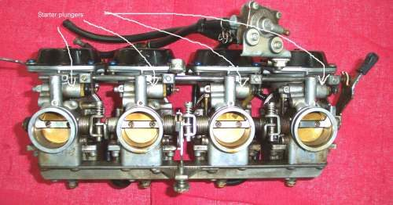

A cold engine does not vaporise petrol well, and petrol only burns as vapour. A cold start therefore needs extra fuel. Many carburettors give it with a separate starter circuit: a plunger lifts, engine suction pulls fuel from the bowl through a small starter jet, mixes it with air, and sends the rich mixture into the intake. This page checks that circuit when the bike is hard to start cold or will not stop running rich.
Safety
- Fuel burns. Work with the engine off and cool, and no flame or spark near.
- Turn the fuel tap off before removing the float bowl.
How the circuit works
- The throttle slide must be closed. The strong suction behind a closed slide pulls the starter mixture. Opening the throttle weakens the suction and stops the circuit.
- The plunger is worked by a knob, a lever or a cable. Other makes use a cable-operated disc that covers and uncovers the starter port, and some scooters use an electric or heat-operated plunger. Check the manual for your model.
- The starter jet is a small brass jet low in the float bowl. It is the usual place for a blockage.
Steps
- With the engine off, work the knob, lever or cable. The plunger should move freely and spring back fully. See Adjust the choke cable for cable free play.
- Look for a plunger that sticks part-way. A plunger that does not seat gives a rich mixture and a high idle after warm-up.
- Remove the float bowl. Find the small brass starter jet and the passage beside it. Look through it toward light.
- Clean the starter jet and passage with carburettor cleaner and compressed air or a soft strand. Do not enlarge the hole with a wire.
- Inspect the plunger end and its seal for wear or swelling. Replace the plunger if the seal is damaged.
- On a multi-cylinder engine, check each plunger. One stuck plunger gives a rough idle on one cylinder.
- Refit with a new gasket and test a cold start.
Check your work
- Cold start works with the starter on and the throttle closed.
- The engine settles to idle once the starter is off, with no black smoke.